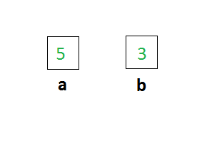
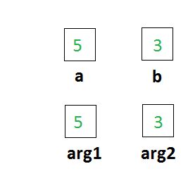
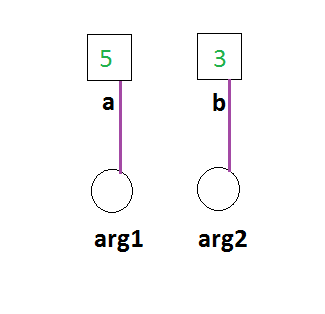
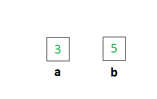

This tutorial explains the concept of Pass-by-reference.
But to appreciate its usage we first look at the more commonly used Pass-by-value.
Consider the following example code.
int main() {
int a = 5 ;
int b = 3 ;
intSwapPassByVal(a,b);
intSwapPassByRef(a,b);
return 0;
}
intSwapPassByVal and intSwapPassByRef are the Pass-by-value and Pass-by-reference versions of a function that swaps two integers which are passed as arguments to it.
Let us see what happens when the program is executed.
The first two lines:
int a = 5 ; int b = 3 ;
Memory is allocated for the integer variables a and b and they are initialised with the corresponding values.
The function call:
intSwapPassByVal(a,b);
The function call to the Pass-by-value version of the intSwap() function.
Let us go into the defintion of the function intSwapPassByVal()
void intSwapPassByVal(int arg1 int arg2){
int temp;
temp=arg1;
arg1=arg2;
arg2=temp;
}
The first line allocates memory for the two variables arg1 and arg2 and copies the values of a and b into arg1 and arg2 respectively.
a and b are called the actual parameters while arg1 and arg2 and called the formal parameters.
Here the point to note is that a copy of the variables a and b is created and stored in arg1 and arg2.
Now lets look at the swapping code.
(i)Memory is allocated for the variable temp,(ii)arg1 is copied into it,(iii) arg2 is copied into arg1 and (iv) value of arg1 which was safely stored in temp is copied to arg2.
This is illustrated sequentially in the images below:
Now the control returns to the main function.All the local variables including arg1,arg2,temp are destroyed.
The values of a and b are still 3 and 5!
And this is expected because we never actually changed the variables a and b themselves, rather we copied them into arg1 and arg2 which we called the formal parameters and changed them. So when the control returned a and b are untouched!
This is where the importance of Pass-by-reference becomes apparent.
Now let us see the swapping of a and b again but this time using Pass-by-reference.
intSwapPassByRef(a,b);
Note that the function call to the Pass-by-reference version of intSwap is exactly the same as for the Pass-by-value version! So just by looking at the function call it is impossible to tell if it is Pass-by-value or Pass-by-reference. We need to look at the declaration or the actual defintion of the functions to identify.
The definition of the Pass-by-refernce version of intSwap
void intSwapPassByRef(int& arg1, int& arg2) {
int temp ;
temp = arg1 ;
arg1 = arg2 ;
arg2 = temp ;
}
When the function is called arg1 and arg2 become what we call the references to the actual parameters a and b.
Now the swapping.
(i)First memory is allocated for the variable temp.
(ii) 'temp=arg1': arg1 which refers to a is copied into temp ,that is, effectively a is copied into temp and temp now contains 5.
(iii)'arg2=arg1': arg2 is copied into arg1, but since any changes made to the references are seen in the referred variables arg1=arg2 actually copies b into a,that is a now contains 3.
(iv)Similarly arg2=temp actually copies the value of temp that is 5 into a, since arg1 is the refernce of a. So a now contains 5.
These changes are illustrated sequentially in the images below.
Now the function returns to the main function and temp, arg1 and arg2 are destroyed. Only a and b remain but with their values swapped!
We notice that Pass-by-refernce brought about the changing of the actual parameters which is very useful is many scenarios.